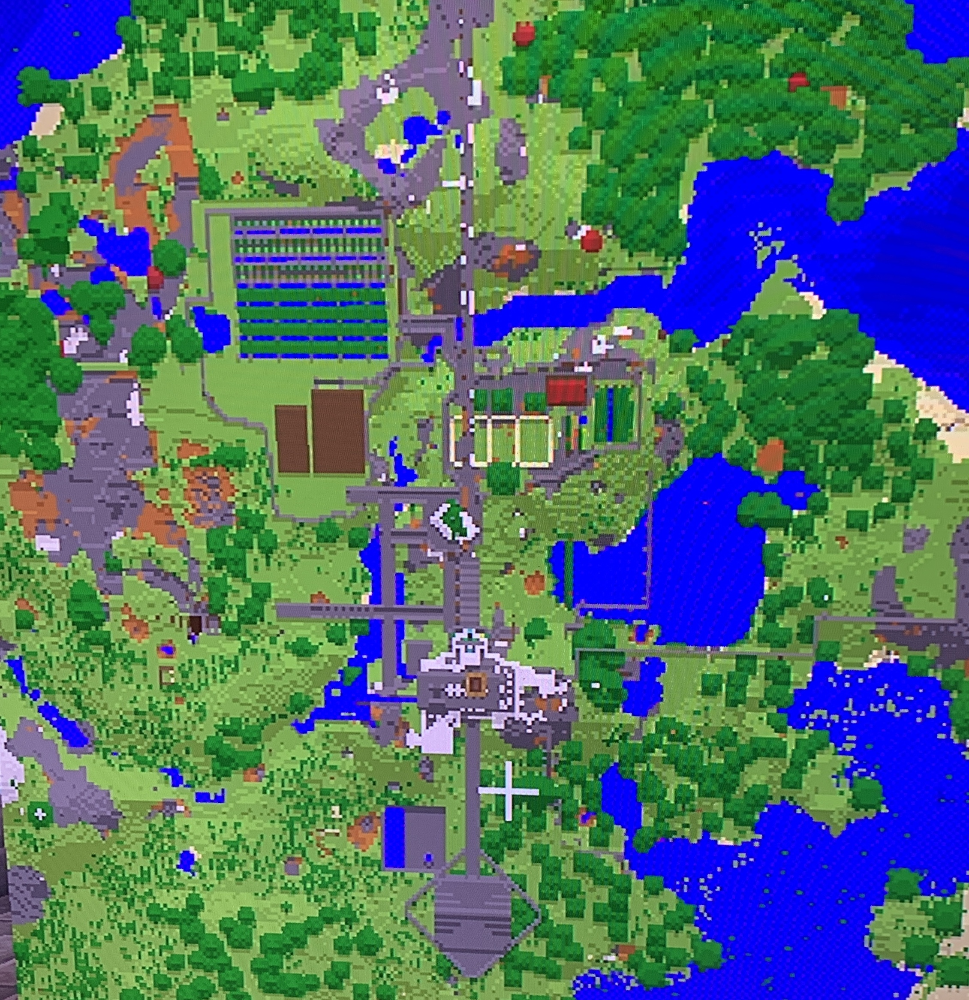
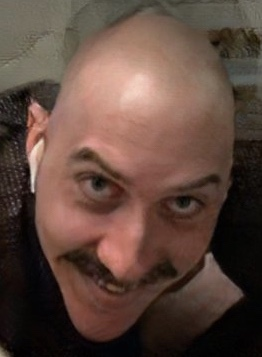
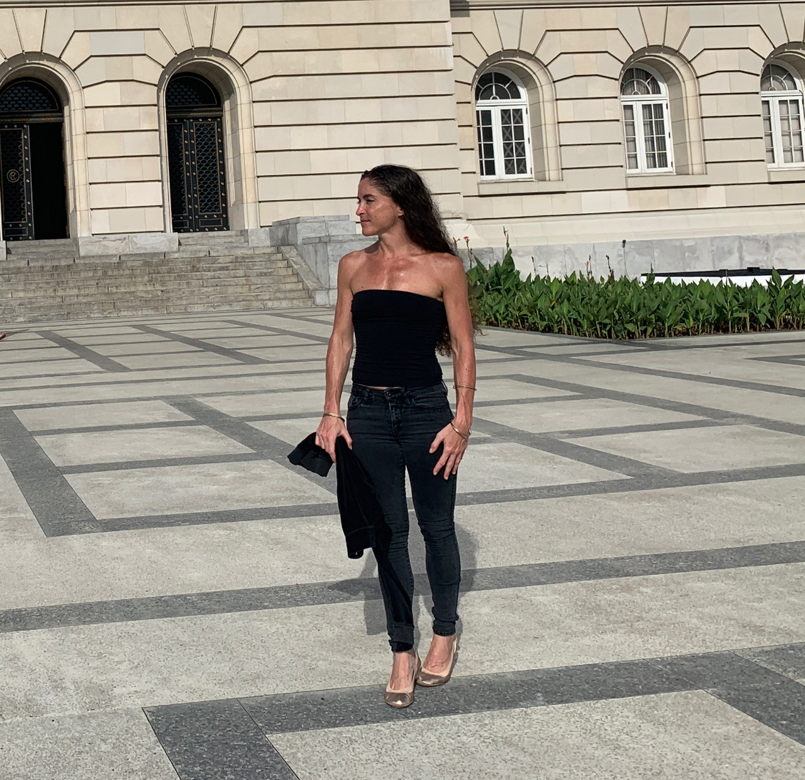
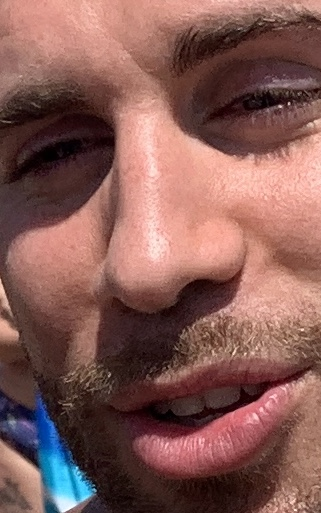

====NEVEN WORLD====

Click to forward to any of the following sections:
- General Description
- Website Structure
- Section Descriptions
General Description
Welcome to Neven's Minecraft website!
As you may have guessed, my name is Neven! I have been playing Minecraft
for a couple of months now. For those unfamiliar with Minecraft,
it is a famous sandbox video game created by game developer Markus Persson,
released in 2011. The game has gone on to become the single best-selling
video game of all time. It features many different game modes, most of
which involve creative construction elements. It is a game where players
can express their own creativity and choose to forge their own paths in
the large open world!
I only recently began playing PS4 Minecraft's survival mode. In survival,
the player must gather resources and survive inside of a hostile environment
which features many dangers and perils; the risk of death is always present,
ranging from death by dangerous monsters to starvation or falling in lava.
While playing in survival mode may be quite challenging, it is quite
rewarding at the same time!
The purpose of this website is to showcase my PS4 Minecraft world,
colloquially know as Neven World. I have invested many hours and
sleepless nights improving upon Neven World, and building my mega-base.
This website will be the perfect venue to document the ins and outs of my
base, while also providing the opportunity for others to apply and be a part
of the Neven World experience! Neven World was not built by Neven alone,
and this website will serve to acknowledge all contributers!
Website Structure
The website will contain the following sections/elements:
- Base Description - The section of the website dedicated to describing the main base.
- World Description - The section of the website dedicated to describing points of interest in Neven World.
- Contraptions - This section will describe the many complex redstone contraptions and farming techniques.
- Upcoming Projects - This section will describe future projects in Neven World.
- About Page - This page will describe the main contributors of Neven World (including interns).
- Opportunities - This section will list opportunities/openings available in Neven World.
Section Descriptions
- Base Description
This section will serve to describe the main base. This section itself
will be subdivided into additional sub-sections:
- Castle - Will describe and image the main castle.
- Outside - Will describe the outdoor areas surrounding the castle including the farm.
- Basement - Will outline the basement (where it all started) and surrounding areas.
- The Prison - Will describe the prison area which holds kidnapped villagers.
- Mines - Will describe the resource mines.
- Secret Areas - Will serve to describe secret/classified areas.
- Additional - Will describe any additional smaller areas in the base.

An overhead map of the main base.
- World Description
This section will describe various points of interest in Neven World. Some of the included
sub-sections will be:
- Vacation Home - Will describe the woodland mansion that once belonged to the bad guys.
- Pat's House - The intern's house.
- Nearby Villages - Will describe nearby villages including the village from which prisoners were taken.
- The Nether - Will describe points of interest in The Nether
- The End - Will describe points of interest in The End
- Miscellaneous - Will describe any additional things in Neven World.
- Contraptions
The contraptions section will serve to describe the plentiful farms and contraptions
available in the main base and Neven World at large. The table below describes
some of these contraptions and their properties:
| Contraption Name |
Redstone? |
Mechanical? |
Danger? |
Complexity |
| Elevator |
Yes |
Yes |
Medium |
Very High |
| Automatic Melon/Pumpkin Farm |
Yes |
Yes |
None |
Medium |
| Automatic Sugar Cane Farm |
Yes |
Yes |
None |
Low |
| Iron Golem Farm |
No |
Yes |
Medium |
Very High |
| Mob Farm |
No |
Yes |
High |
High |
| Secret Door |
Yes |
Yes |
Low |
Very High |
It should be noted that this table is not comprehensive, and there are far more contraptions
to be described!
- Upcoming Projects
This section will list upcoming projects in Neven World. These projects will
include some of the following activities:
- renovations on the castle
- renovations on the mine
- exploration activities
- builing a new intern's quarters for incoming interns
- resource mining projects
- building new structures in The Nether
- hiring new interns
- building new contraptions
- ...and much more!
- About Page
This page will feature the primary contributers to Neven World. It will include
sections on the following individuals:
- Neven
The current King and chief architect of Neven World. Neven has been responsible
for the majority of the building and designing of the main base. The game runs on
Neven's PS4 and can be accessed by invite-only. Executive decisions regarding the main
base must be approved by Neven.
- Justin

The current Queen of Neven World and primary assistant to Neven. Justin was the
one who got Neven into playing Minecraft as he had played previously. Neven has since
far surpassed Justin in terms of skill and superiority. Despite his inferiority, Justin
has been pivotal in the development of the main base and has helped to further exploration
activities.
- Tiffany

While Tiffany has yet to pick up the controller and join Neven World, she has
nonetheless been pivotal in its developent, as she is primarily responsible for feeding
and taking care of Neven while he plays. Tiffany is expected to take up an internship
at Neven World starting in 2020.
- Patrick

The current Intern of Neven World. Patrick is not very creative, and as
such, he has been relegated to the outskirts of Neven World, far from the main base. While
he has been given his own intern's quarters and starter kit, he is being forced to fend
for himself as a way to prove his worth before being allowed to join the main base.
- Opportunities
This section will serve to list any opportunities that may be available in Neven
World. These opportunities may include contract work, internships,
partnerships, or training opportunities. This section will contain contract
information regarding these opportunities.